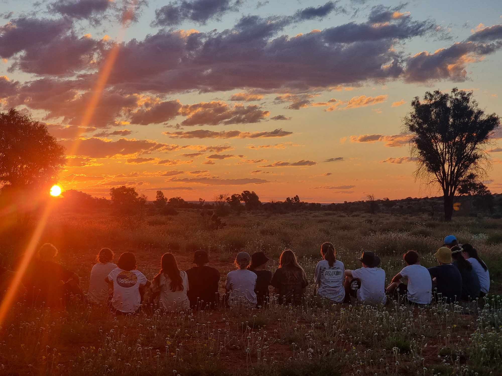
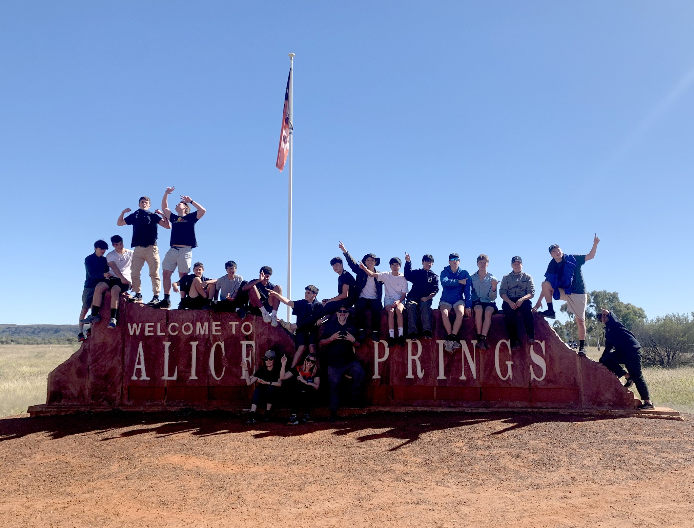
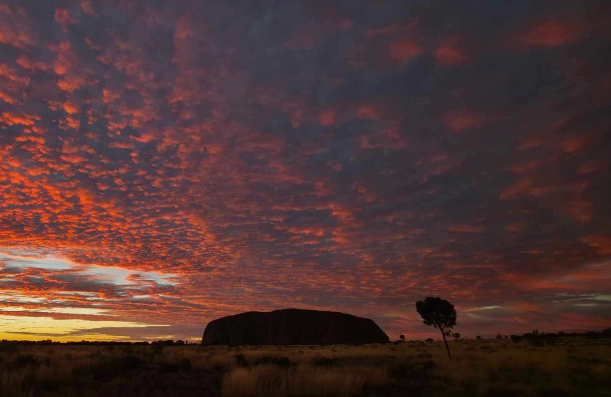
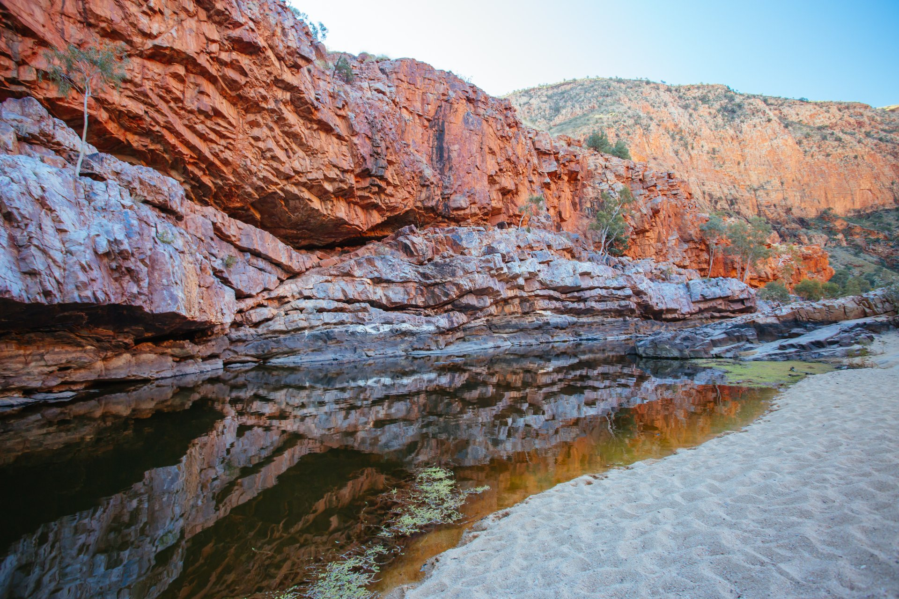
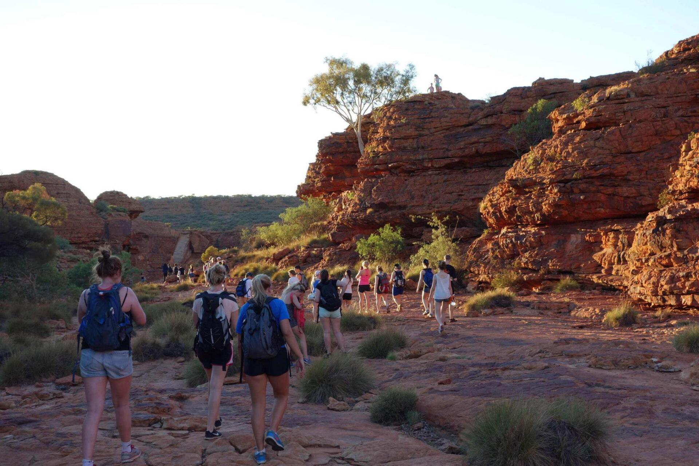
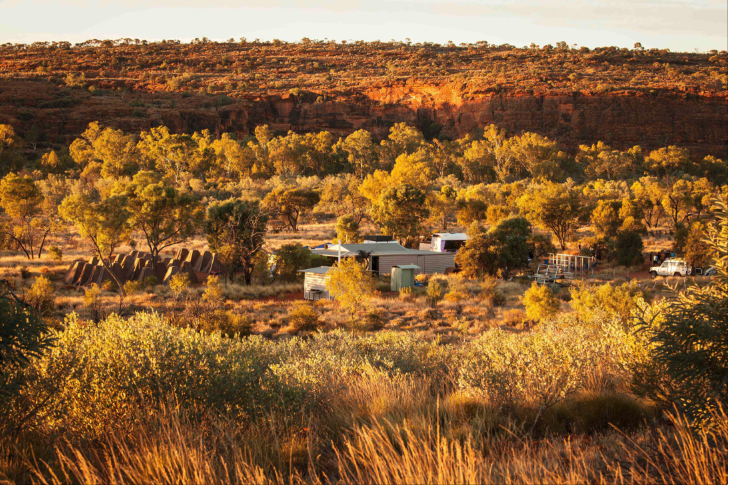
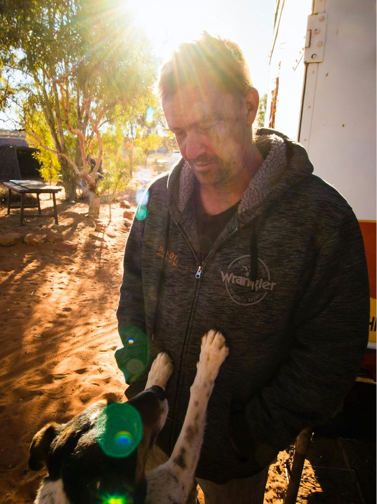
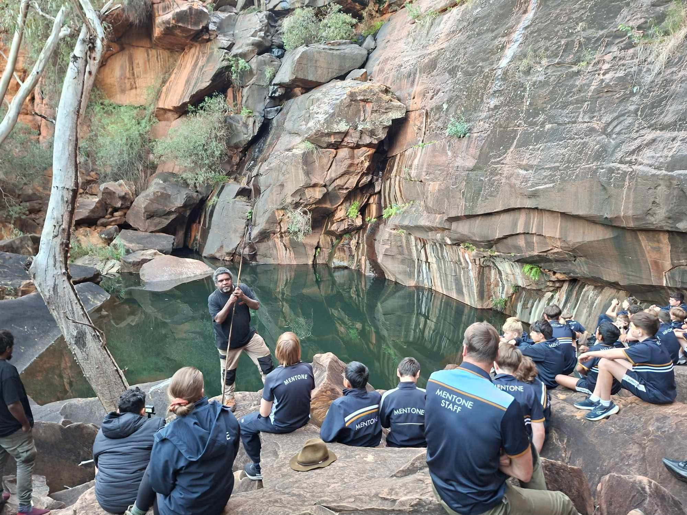

Cultural Trip
Visit and learn through guided cultural experiences.
ExploreRemote Education Tour specialises in delivering culture-first educational experiences in the heart of Australia. We create safe, meaningful and memorable journeys for schools, communities and visitors.
Tours
Our tours take you through some of the most iconic landscapes in Central Australia while creating opportunities for learning, connection and cultural understanding.

Visit and learn through guided cultural experiences.
Explore
These are some of the places you can see in Alice Springs (1-3 days).
Explore
The Territory's most famous icon.
Explore
The Western Max (1- 2 days).
Explore
Watarrka National Park is home to the famous Kings Canyon (2-4 days).
Explore
"Come to my land and I will tell you a dreamtime story"
ExploreAbout Us
We value respectful, community-led experiences. Our tours are shaped by local knowledge and long-standing relationships across Central Australia.
Learn More
CUSTOMER VOICES
"Incredible", "live-changing tours", "Knowledgeable"
”
Amazing experience!! Would 100% recommend if you want to see the beautiful land. Seeing all the special landmarks and being told so much information about it was incredible. Ray and Greg helped guide us through everything and made us feel comforted and safe throughout our whole trip with remote educations tours. Amazing food was given to us with plenty of snacks along the way. Was a 10/10 experience! Would definitely recommend.
”
Reg is a highly respected and knowledgeable tour guide who champions the traditional owners of this land. The relationships he has built over decades of work out here gives you access to some of the most remote and sacred places in the entire nation. His deep respect for culture, combined with his gift for storytelling, makes every experience not just informative but truly moving. If you want an authentic, unforgettable connection to Country, there's no one better to guide you than Reg.
”
This is our 4th trip to Central Australia with Remote Tours. Once again our students were cared for, nourished, kept safe, and had loads of fun. Their curiosity was fuelled, and they experienced Aboriginal history and culture in a way they couldn't do anywhere else. Reg and the team are doing marvellous work. I could not recommend Remote Tours highly enough.

Find answers to common questions about our tours, travel arrangements, group requirements and booking process.
Learn More ● →